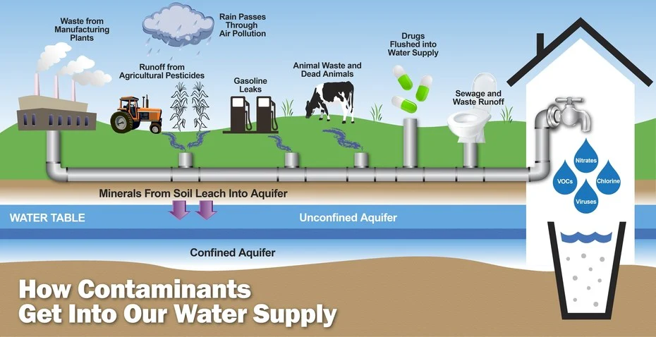
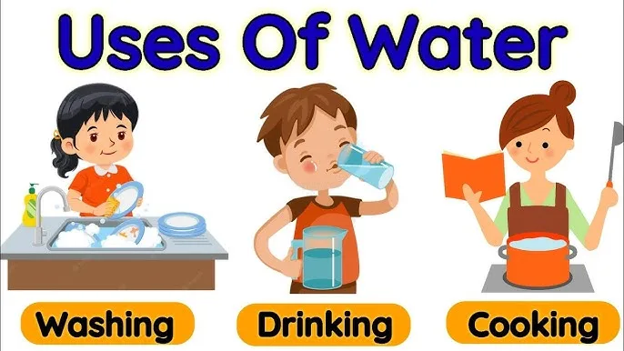
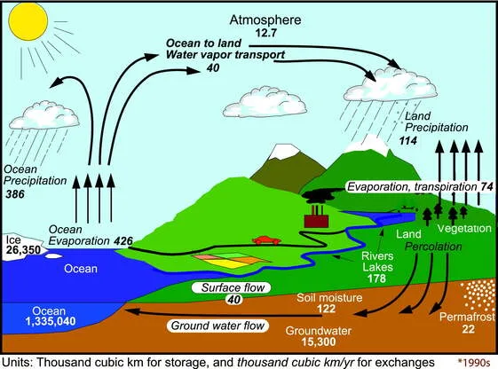
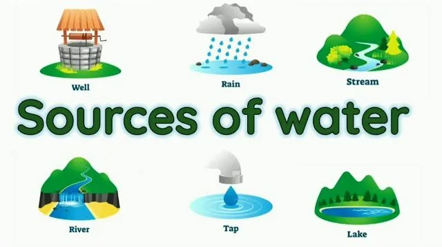
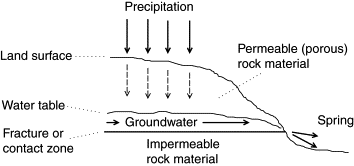
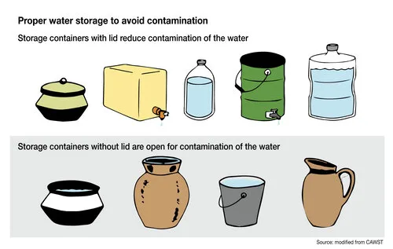
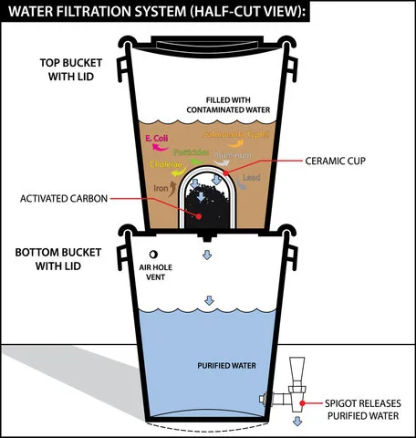

Expanded Nursing Uganda Explanation
Safe water supply should be reviewed through safe maternal and newborn assessment, early recognition of danger signs, respectful communication and timely referral. Connect the definition to vital signs, bleeding, fetal or newborn wellbeing, patient education and local protocol requirements.
Contents — 14 sections (tap to expand)
01 Water
Water is the liquid that forms the rivers, lakes, swamps, rain etc. and is the basis of fluids of living organisms, it is essential for life and forms 60% of body weight.
Composition: Water is composed of two parts hydrogen and one part oxygen (H₂O).
- Physical Properties: It is colorless, odorless, and tasteless. Its boiling point is 100°C, and it has a specific gravity of 1.0.
- Chemical Properties: It is neutral to litmus paper, acts as a universal solvent, and reacts with certain chemicals to form acids or salts.
Water has two main properties:
- PHYSICAL PROPERTY -It is colorless, odorless, and stainless and its boiling point is 100 degree centigrade. It assumes the shape of the container, has a specific gravity of 1.0.
- CHEMICAL PROPERTY -Neutral to litmus paper, is a universal solvent, reacts with hydroxide to form salt, and reacts with nonmetal to form acid.
- Severe vomiting.
- Severe diarrhea, cholera
- Severe sweating.
- Severe burns.
- Poly-urea following diabetic disease.
- Inadequate intake of water.
- Prolonged heating by hot sun shine.
- Through the lungs during expiration of carbon-dioxide from the lungs.
- Through the kidney in form urine, in situations where over activation of kidney is involved either by an infection or anti-diuretic drugs.
- Through the skin as in severe burns, severe sweating while working under hot sunshine or room even in diseases which results into sweating.
- Through the gastro intestinal tract, i.e. through vomiting or diarrhea where by the intestinal lining is not in position of absorbing the required amount of water.
02 USES OF WATER
NB. The body requires an average amount of water of (1½-2) liters a day to replace the lost amount and this maintains good health and functioning of the body.
- It is needed for building all body tissues and is the basis for all body fluids and secretions such as blood, lymph, urine, gastric juices and respiration.
- Provides some mineral salts.
- Helps to prevent constipation.
- Regulates the body temperature.
- Helps in the execration of waste products from the body.
- Replaces fluids lost from the body.
- Washing the body, Utensils, Vehicles.
- Cooking and cleaning vegetables.
- Watering gardens, plants and fruits.
- Used in water carriage systems.
- Drinking for animals and humans.
- Recreation like swimming, and industrial use.
- Agricultural purposes.
- Tourist attraction.
- Means of transport.
- Construction purposes.
03 FACTORS THAT INFLUENCE AMOUNT OF WATER TO BE USED
- Availability of water – People tend to misuse water when there is much supply and economize when there is scarcity.
- Climatic factor. People use water during hot condition more often for bathing and drinking.
- Distance – Fetching water from far distance is hard and therefore people tend to economize water.
- Activities – Grinding mills and irrigation takes a lot of water.
- Standard of living - people of advanced standard of living use a lot of water.
NB. Drinking water should be pure, colorless with no smell.
04 THE WATER CYCLE
This is a circulation process of water in different stages.
- Water goes in a cycle, it falls as rain and fall into the ground and some runs off as stream and gradually much of it collects into the rivers and sea.
- From the sea, lakes, rivers, streams and any wet surfaces like forests, plants and respirations of man and animals. The water vapor rises into the land and as it cools, it condenses and forms clouds and later falls as rain.
05 SOURCES OF WATER
Rain, Ocean, Sea, Lakes, Rivers, Swamps, springs, Wells, Glaciers {on top of the mountains}.
Is a source of water for many people. It may be collected from the roofs by means of gutters and pipes. Rain water is pure but becomes contaminated as it falls through the atmosphere and collecting places. It should be purified before drinking.
- It is pure.
- Soft, does not waste soap.
- Does not coat saucepan.
- It is cheap.
- Can be contaminated as it falls from the atmosphere.
- Needs purification before use.
- Difficult to collect when using a grass thatched house.
- Rain water may fall concurrently with strong wind, ice, thunder strike which may become destructive to crops, houses and human life.
- Gutters and large tanks are required {expensive}
- The water is soft and does not contain any essential salt.
- May not taste good.
This comes from rain water and they are – the most common source of water for most people and also most polluted or contaminated by animals’ droppings, defecations, urinations by man, washing of clothes, swimming, children playing in it, leakage from latrines built too near.
Examples of surface water are:
- Rivers.
- Lakes.
- Springs.
- Dams.
- Easily accessible and can be obtained by hands or simple pimping,
- It’s permanent, e.g. Rivers, Lakes etc.
- It is large and can be adequate for other uses.
- Highly contaminated.
- Chemicals from industries are deposited in it which can be harmful.
- Needs purification before use {expensive.}
- Source may be dangerous.
This water is formed from sinking water when rain falls. It can be in form of spring or well.
- Spring water. This where the underground water comes to the surface, it may be shallow or deep. a. Shallow spring. Is where the rain water is arrested in the first impermeable layer of the soil and comes out as spring where this layer reaches the surfaces.
- b. Deep spring. This is where rain water has passed through at least one impermeable layer of soil and comes out as a spring where deep layer reaches surfaces.
- Wells. This is where a hole is dug and water is brought to the surface. It may be shallow or deep well. a. Shallow well. Here the hole is dug and water is brought to the surface from the first impermeable layer of soil.
- b. Deep well. This is where the hole is dug through one or more impermeable layers of soil.
Water from shallow springs and wells is usually soft but contaminated; the floor may not be constant during dry season. This water needs purification before use.
Water from deep springs and wells is soft and pure but may be contaminated if the spring or well is not protected. The quantity is good and not affected by dry season.
- Hard water due to dissolved mineral salt.
- Expensive to dig.
- Water from the first impermeable layer may contaminate.
- Water area needs proper protection.
NB. Water from the springs or well may be hard or soft.
This contains excessive mineral salts such as calcium and magnesium, it is usually found in deep wells and springs, if the well or spring is well protected is safe for drinking.
- Difficult to form leather and waste soap.
- Takes longer to boil, wasting fuel.
- Impairs the texture and color of materials, not good for cleaning the skin hair.
- It hardens the outside of meat and vegetables and germs and ova of hook worms not killed.
- Not goods for cooking and making tea.
- It leaves ring of scum on bath and skin needing extra cleaning.
- On boiling, hard water deposits fur which spoils pots and kettle.
Is water that contains little or no mineral salts eg rain water, lakes, shallow wells, springs, rivers etc.
- Good for cooking, washing, cleaning utensils.
- Easily forms lather hence does not waste soap.
- Usually highly contaminated.
- Needs purification all the time/expensive.
- Not good for drinking, unpleasant taste.
- Have no or very little minerals.
- It dissolves lead which causes poisoning.
06 SOURCES OF CONTAMINATION OF WATER
- By humans - By dirty habits in or near water supply such as urinating, disposing refuse, bathing or washing clothes, swimming or playing and Seepage from latrines built too near to the water supply.
- Animals - Grazing, defecating, urinating or washing in water.
- Dirty storage tanks or ports or leaving the pot uncovered.
- Dirty containers user for collecting water or leaving the water uncovered.
- Putting arms or cups into the water, a floater should be used leaving the water standing on the floor.
- Using containers made from lead for collecting and storing the water, it can get spoiled if stored for long.
-Depositing of rubbish or chemical in the water.
Such as lead pipes or lead container dissolved in water
07 DANGERS OF CONTAMINATED WATER
- It spreads diseases Typhoid and Paratyphoid, Dysentery, Diarrhea Hepatitis.
- Poliomyelitis.
- Guinea worms.
- Bilharzias.
- Hook worms, roundworms, pinworm, bilharzias.
- Eye and ear infections.
- Skin diseases.
- Bilharzias.
NB. Mosquitoes breed in stagnant water and spread the organism of malaria, yellow fever, Dengue fever and filariasis, small black water flies. Which leaves in water may spread the micro-organisms causing river blindness {onchocerciasis}
08 PREVENTION OF CONTAMINATION OF WATER
- The water supply must be protected from children playing and animals defecating, urinating, disposing of refuse, bathing, washing clothes, swimming should not be allowed in or near water supply.
- Parts of rivers and lakes used for domestic purposes and spring should be protected and fenced around. Wells should be dug deep and cemented or bricks to the first impermeable soil to prevent shallow and deep water mixing. If possible a pump should be fitted as a use of buckets may contaminate the water.
- If a pump is not possible, a wall should be built around the well and have a good fitting lid/cover, Ion pipes should be used not lead. Pipes and pumps should be kept in good condition.
- The ground around the well should be cemented with a drain to lead away wasted water.
- Latrines, septic tanks or soak pits should be at least 50 meters from the water source.
- The water should be kept in clean containers kept covered and raised off the ground.
- Hands should be washed before handling containers.
- A dipper should be used for removing the water and left floating and dipper not used for other purposes.
- Hands should not be dipped in water.
- Children should not be allowed near the water places.
09 STORAGE OF WATER
In homes, water may be kept in clean pots or galvanized irons or cement tanks at the side of the house.
- WATER POTS. Water pots must be kept clean, covered raised off the ground, no hand dipping in a pot.
- TANKS. Made either by galvanized iron or concrete and built at the side of the house. Water is collected off the roofs by means of gutters and pipes leading to the tank. The tanks should be made in so that a person can enter in it and clean, but to have a tightly fitting lid to keep out insects and impurities. The openings where the water runs in should be covered with wire gauze to keep out mosquitoes and refuse. The tap for drawing off water should be at least 12 cm from the bottom of a tank to avoid drawing off the sediment from the tank. There should be a drain around the tank to carry away waste water. Arrangement should be made to reject the first rain water as it is highly contaminated.
- AT WATER WORKS. Water is stored at large scale and in a large covered ventilated tanks and pumped the towns, buildings and houses through pipes.
10 PURIFICATION OF WATER
Water can be purified in two ways.
- When water is moving slowly, solid matter such as mud, sand settle at the bottom.
- Water plants absorb carbon dioxide and give out oxygen.
- Sun light and oxygen kills many germs and prevent growth of others.
- Some germs are eaten by the protozoa; protozoa are eaten by the insects and insects eaten by the fish with their larva.
- Boiling. Kills many germs and destroy in organic impurities. The water is allowed to boil for five minutes, it is then poured into a clean covered container and allowed to cool.
- Homemade filter. This consist of two clean water pots, some holes are drilled into the bottom of one pot and wire gauze is placed on top the holes and then stones. Gravels and sand in layers and impure water is poured on top, this pot is placed on top of another clean pot which is raised off the ground. The water filters through the, stones, gravel and sand into clean water pot underneath. DIAGRAM SHOWING HOME MADE FILTER.
- Chlorinating. ¼ or four drops of chlorine or lime is added to 16 liters of water and left for ½ an hour, the water is then safe for drinking.
- Candle filter This consists of two containers; the top container has one or two candle filters. The impure water is then poured into this container and then placed on top of the bottom containers. This filter through the candle filters into the bottom container. There is a tap at the bottom side for withdrawing the clean water.
- Use of aqua tablets. One tablet of aqua is dropped into 20 liters of impure water and left for 30 minutes and after that the water is safe for drinking.
Water from the river and lakes passes into the sedimentation tank, large open tanks and stay for three or more weeks where natural purification takes place by the following process.
- a) Sedimentation This is where matter settles at the bottom.
- b) Sunlight. Kill bacteria and prevent growth of others.
- c) Oxygen. Acts on some impurities and makes them harmless.
- d) Natural death of germs as they do not survive for three weeks then water passes for filtration process.
The water passes through a filter bed made up of:
- At the bottom are stones.
- Above this layer of gravel.
- A layer of sand.
- A green gelatinous layer of algae made of minute pants forms of top.
This green layer is the real bacterial filter and filters 90% the bacteria in the water. When this layer becomes too thick, it is removed and a new layer is allowed to form. This takes about two days.
Next the water is piped to the chlorinating house where chlorine gas is added, this kills germs and sterilizes the water.
The purified water is piped to large, covered ventilated tanks and from there the water is piped to towns and buildings through iron pipes.
- List three sources of water and provide one major advantage and disadvantage for each.
- What is the difference between hard water and soft water ?
- Name three diseases that can be spread by contaminated water.
- Describe the three-pot system for home water filtration . What is the purpose of each layer?
- What are the four main steps in the large-scale purification of water?
11 Nursing Uganda Clinical Lens
Use Safe water supply as a practical nursing topic, not only a memorized definition. Link cause, transmission, incubation, clinical features, treatment support and prevention.
- What to understand first: define safe water supply, identify the normal or expected pattern, then explain what changes when the patient is unwell.
- Why it matters in care: the nurse must recognize risk early, explain findings clearly, document accurately and know when to escalate.
- How to revise it: connect each point to assessment, nursing diagnosis or care problem, intervention, rationale and evaluation.
12 Assessment Guide
- Temperature, pulse, respiratory status, hydration, pain, rash, wounds, stool, urine or sputum changes.
- Exposure history, travel, contacts, vaccination status and comorbidities.
- Specimen orders, isolation needs, antimicrobial history and danger signs.
13 Nursing Priorities, Rationales and Outcomes
- Use standard precautions and transmission-based precautions where needed.
- Support hydration, nutrition, medicines, monitoring and early referral for severe disease.
- Teach prevention, adherence, hygiene, safe water, vector control or contact tracing as relevant.
The rationale for these priorities is patient safety: nursing actions should prevent deterioration, reduce discomfort, support recovery and create clear evidence for the next caregiver.
- Expected outcome: Symptoms improve, complications are detected early, transmission risk is reduced and treatment is completed correctly.
14 Patient Teaching and Revision Check
- Explain safe water supply in simple language the patient or caregiver can repeat back.
- Teach warning signs, medicine or follow-up instructions, hygiene or lifestyle points where relevant.
- For exams, prepare a short answer using: definition, causes or risk factors, signs, assessment, management, complications and prevention.
- For ward practice, document baseline findings, actions taken, patient response and the plan for review.
Illustrations and Diagrams (7)







Related Video Lectures
Watch nursing lecture videos on YouTube for this topic. Opens in a new tab.
Watch on YouTubeExternal link: YouTube may use its own cookies and terms. Nursing Uganda is not affiliated with YouTube.